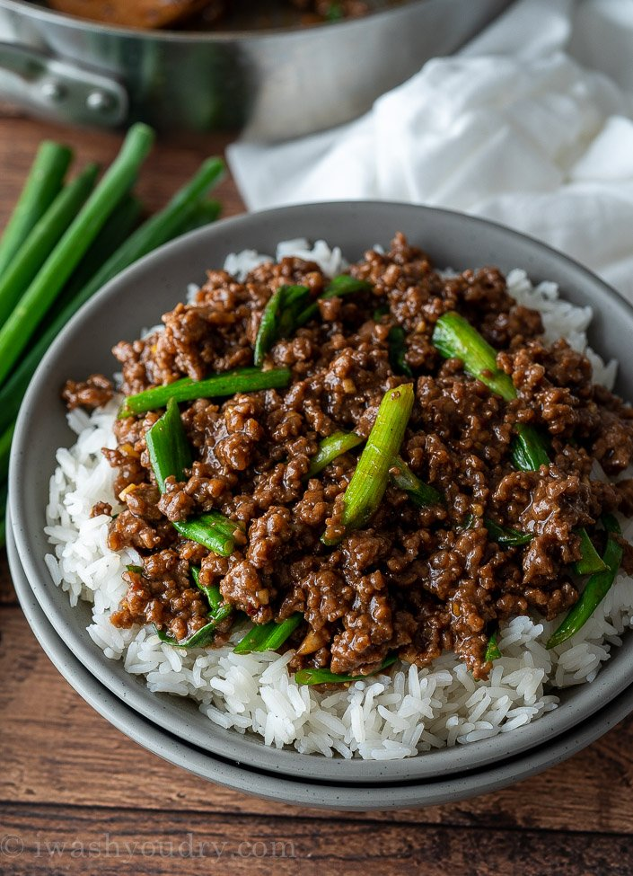

Liellopa maltā gaļa

(MANS PAZEMĪGAIS VIEDOKLIS):
MALTA LIELLOPA GAĻA UZTURVĒRTĪBAS ZIŅĀ IR ĻOTI LĪDZĪGS
ĒDIENS VISTAS ĶRŪTIŅAI, TAČU GARŠU BUĶETE IR NUDIEN CITA.
ŠIS ĒDIENs IR, MANUPRĀT VIEGLĀK PAGATAVOJAMS PAR VISTU, UN,
LAI TAS IZDOTOS PATIESI GARDS, IR JĀZINA ŠIE IZSMALCINĀTIE
PAGATAVOŠANAS TRIKI.
Sastāvdaļas:
- 400-500G maltas liellopa gaļas
- Puse sīpola
- Ķiploku daiviņa
- Universālā gaļas garšviela
- Sāls, pipari (malti melnie vai čili)
- Sriračas mērce (pikantu garšu cienītājiem)
Pagatavošana:
- Sacep sīpolus, mazliet vēlāk pievieno ķiploku
- Kad ķiploki un sīpoli ir apcepti, pievieno gaļu
- Gaļu sasmalcina ar cepamo lāpstiņu
- Pievieno garšvielas. sāli pievieno vēlāk
- Brīžiem var uzlikt vāku, lai pasautējas, uz beigām to var noņemt, lai pierauj.
- Kopējais cepšanās laiks gaļai ir apmēram 20 minūtes
GO BACKKKKK